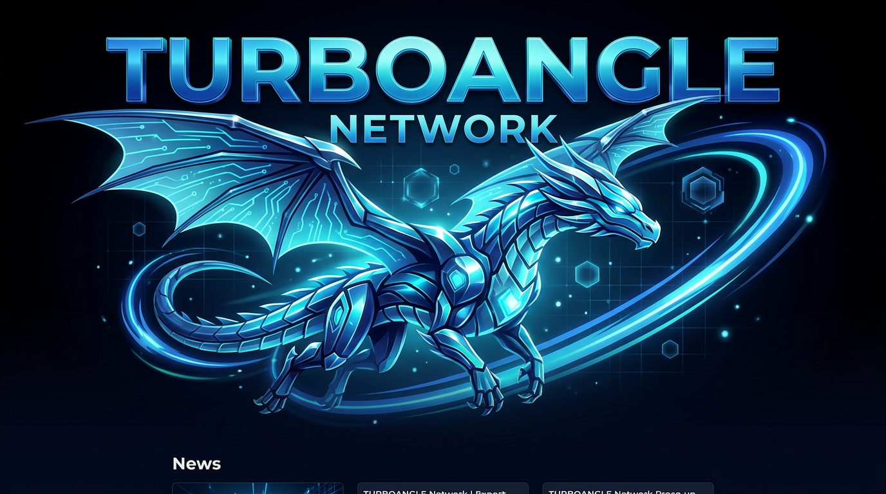

Network Infrastructure Overview: Ultra-High Availability
An in-depth look at our multi-cloud, multi-tunnel distributed infrastructure. Learn how ProxyCore keeps us resilient...
Read Full Spec →
An in-depth look at our multi-cloud, multi-tunnel distributed infrastructure. Learn how ProxyCore keeps us resilient...
Read Full Spec →Dive into the new Cobalt Sea map! Secure your position before the community claims the prime spots. JDK25 support now live...
Explore Map →Checkout the stunning mechanical builds from our top creators this week! The dragon isn't the only cobalt marvel...
View Gallery →